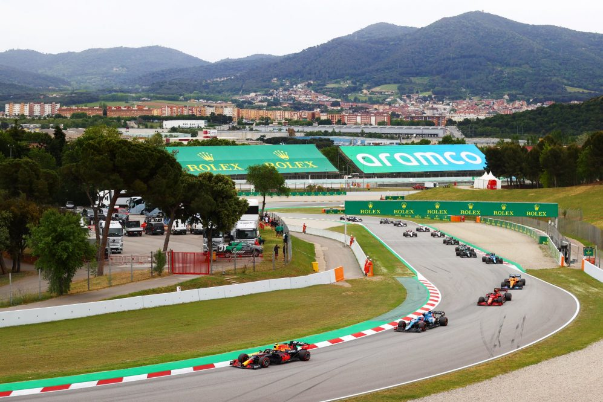

Barcelona 2026-ig benne lesz a F1-es kalendárba
A barcelonai Circuit de Barcelona-Catalunya pálya meghosszabította szerződését az F1-el így 2026-ig
adhat otthont a Spanyol Nagydíjnak. 1991-ben rendeztek itt először nagydíjat a Forma 1-ben és azóta
sok izgalmas futamott láthattunk a katlán pályán. Jövőre Május 22.-én rendezik majd meg a
versenyhétvégét és addig fejlesztések várhatóak a pályán. A fejlesztések a pálya tulajdonosainak a
minél jobb fenntarthatósági törekedései miatt fognak létrejönni.

Forrás: formula1.com
Alonso: egy harmadik cím bebetonozná az F1-es örökségemet
Az Alpine kétszeres világbajnok Forma-1-es pilótája, Fernando Alonso elismerte, már kibékülne azzal,
ha újabb bajnoki cím nélkül vonulna majd vissza véglegesen a sporttól, de egy harmadik cím újabb
magasságokba emelné a történelemkönyvekben.
Már több, mint 15 éve annak, hogy Fernando Alonso a Forma-1 kétszeres világbajnokává vált, a spanyol
pilóta pedig azóta háromszor is nagyon közel került ahhoz, hogy újabb címmel bővítse a kollekcióját:
2007-ben 1 ponttal végzett Kimi Räikkönen mögött...
Folytatás: A
motorsport.com oldalán
Hamilton: Szeretném, ha Russell lenne a következő brit bajnok
Biztosra veszi Lewis Hamilton, hogy egy „harapós” George Russell érkezik mellé a Mercedeshez. Bár le
akarja őt győzni, szeretné is neki átadni a stafétát – mind a Mercedesnél, mind britként.
Az utolsó két idei versenyen még Max Verstappen lesz a fő ellenfele Lewis Hamiltonnak a fiatal
versenyzőgenerációból, 2022-ben viszont a Mercedes versenyképességétől függetlenül akad majd egy új
kihívója: George Russell. A Williamsnél három szezont lehúzó britet sokan tekintik Hamilton
potenciális utódjának, és a Mercedes sem titkolja...
Ugrás: m4sport.hu